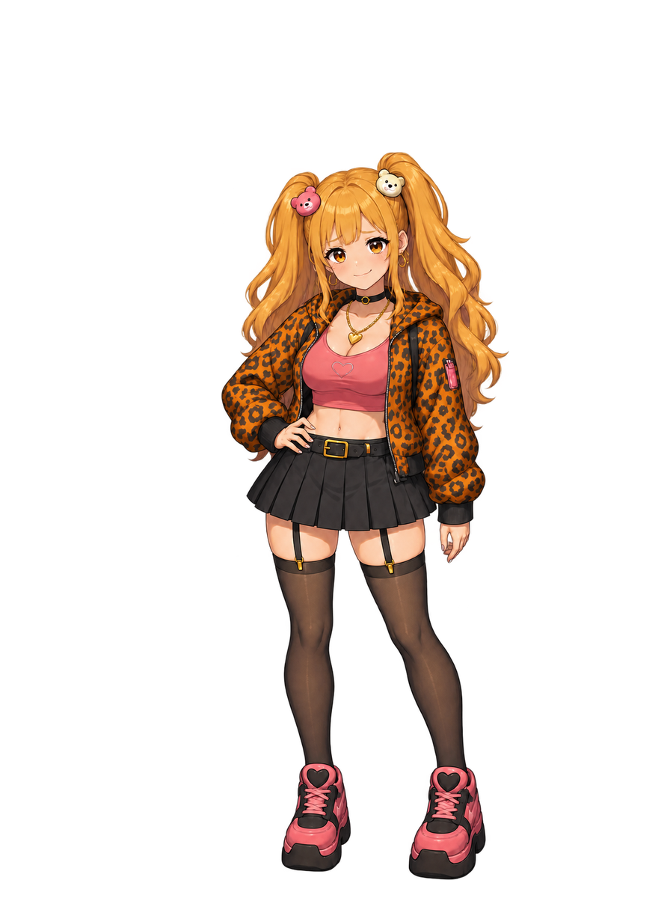

正式キャラと新しい通常立ち絵
みんと・あげはを画風の基準に。新しい3人は採用前の制作案。
みんと（正式）

あげは（正式）
SHISHA-9000
てつこ
ムカイさん
ロボット・明るい背景で透過の確認
てつこ・オレンジと白の毛並み
ムカイさん・渋い大人の印象
通常ポーズの原画・896×1200配置案。既存の立ち絵やアイコンへの本編採用はまだ行っていません。


 ロボット・明るい背景で透過の確認
ロボット・明るい背景で透過の確認 てつこ・オレンジと白の毛並み
てつこ・オレンジと白の毛並み ムカイさん・渋い大人の印象
ムカイさん・渋い大人の印象